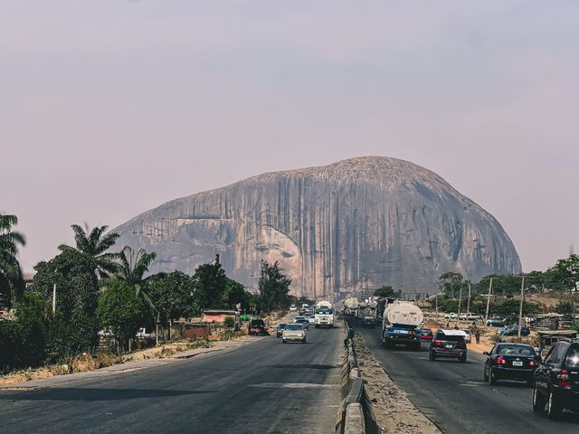
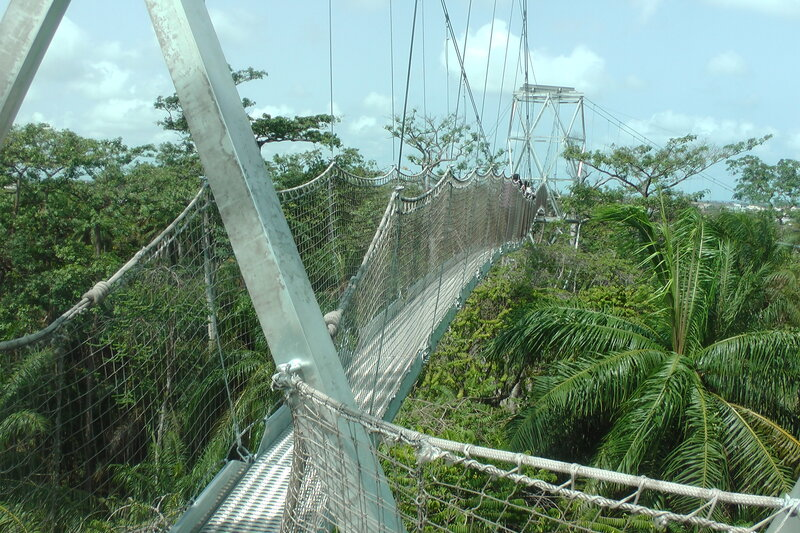

Olumo Rock
Located in Abeokuta, Ogun State, Olumo Rock is one of Nigeria's most famous historical landmarks. It served as a natural fortress for the Egba people during intertribal wars and offers spectacular views of the city.
Nigeria is a vibrant country rich in culture, history, wildlife, and breathtaking natural landscapes. From towering rock formations and lush forests to beautiful beaches and cultural festivals, Nigeria offers unique experiences for travelers from around the world.

Located in Abeokuta, Ogun State, Olumo Rock is one of Nigeria's most famous historical landmarks. It served as a natural fortress for the Egba people during intertribal wars and offers spectacular views of the city.

Situated in Lagos, this nature reserve is home to Africa's longest canopy walkway. Visitors can enjoy wildlife viewing, nature trails, and a peaceful escape from city life.
Located in Bauchi State, Yankari National Park is Nigeria's premier wildlife destination. Visitors can see elephants, baboons, antelopes, and relax in the famous Wikki Warm Springs.